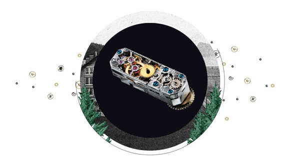
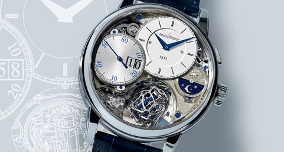

The Story of Jeager-leCoultre
예거 르쿨트르의 역사
영상으로 보기
The Story of Jeager-leCoultre
예거 르쿨트르의 역사
전체보기
The Story of Jeager-leCoultre
예거 르쿨트르의 역사
영상으로 보기
The Story of Jeager-leCoultre
예거 르쿨트르의 역사
전체보기
1833
1833년 앙트완 르쿨트르(Antoine LeCoultre)가 스위스 쥐라 국경지대에 예거 르쿨트르의 최초 시계공방을 설립했습니다.
1844
앙트완 르쿨트르가 개발한 밀리오노미터(Millionometre)는 마이크론 단위까지 측정할 수 있는 최초의 기구로 보다 정교한 시계 부품 제작이 가능해졌습니다.

1866
앙트완 르쿨트르의 아들인 엘리 르쿨트르의 지휘 아래 모든 시계 제조 기술은 서서히 한 곳으로 집중되었습니다.
1903
앙트완 르쿨트르의 손자인 자크 데이비드 르쿨트르는 파리 시계 제조업자 에드몽 예거(Edmond Jaeger)가 스위스 시계제조업체들에게 내밀었던 도전장을 받아들이고 울트라 씬 시계를 개발하기 시작합니다.
1928
장-레옹 휘테(Jean-Léon Reutter)가 발명하고 르쿨트르 & 씨(LeCoultre & Cie) 매뉴팩처가 개발한 애트모스 펜듈럼은 클래식하면서 아방가르드한 분위기를 자아냅니다. 실내 온도가 단 1도만 변해도 에너지를 저장하여 이틀간 작동할 수 있습니다.
1929
초소형 수동 와인딩 칼리버인 칼리버 101을 제작하기 위해 워치메이커들은 듀오플랜 무브먼트를 더 축소했습니다. 사용된 98개 부품의 전체 무게는 1그램도 되지 않습니다.

1931
케이스 뒷면에 숨겨진 이야기를 알고 계시나요? 인도에서 근무하던 영국 장교들이 폴로 경기를 하는 중에도 파손되지 않고 착용할 수 있을 정도로 튼튼한 시계를 만들어 달라는 요청에 의해 탄생된 시계입니다.
1958
정확성, 높은 강도, 자기장 저항 기능을 탑재하고 1958년 출시된 지오피직 크로노미터는 시간의 신뢰도를 상징하는 타임피스 입니다.


1968
메종의 아이콘인 알람 기능을 갖춘 다이빙 시계는 수중에서 소리의 전파를 최적화할 수 있는 특허받은 트리플 케이스백 시스템을 장착하고 있습니다.
2007
1880년대의 크로노미터에서 영감을 받은 듀오미터 컬렉션은 듀얼 윙 컨셉을 기반으로 설계되었습니다. 두 개의 독립된 매커니즘 : 시간의 정확성을 담당하는 파트와 컴플리케이션 기능을 관장하는 두 개의 매커니즘이 하나의 레귤레이팅 기관을 공유하고 있습니다.


2013
마스터 그랑 트래디션 자이로투르비옹 3 주빌리는 자이로투르비옹의 새로운 버전으로 브릿지가 없는 것이 특징입니다. 인스턴트 디지털 카운터를 장착한 크로노그래프는 이 메종의 혁신성을 오롯이 드러내는 기술적 위업입니다.
2018
1968년 탄생한 아이코닉 메모복스 폴라리스에서 영감을 받은 그랑 메종은 워치메이킹 노하우와 현대적이고 스포티한 품격이 어우러진 예거 르쿨트르 폴라리스 컬렉션을 새롭게 출시했습니다.